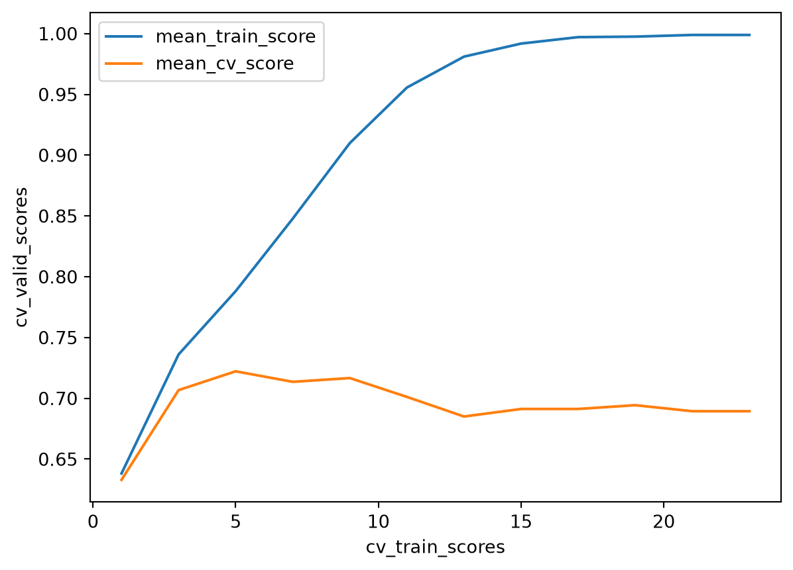
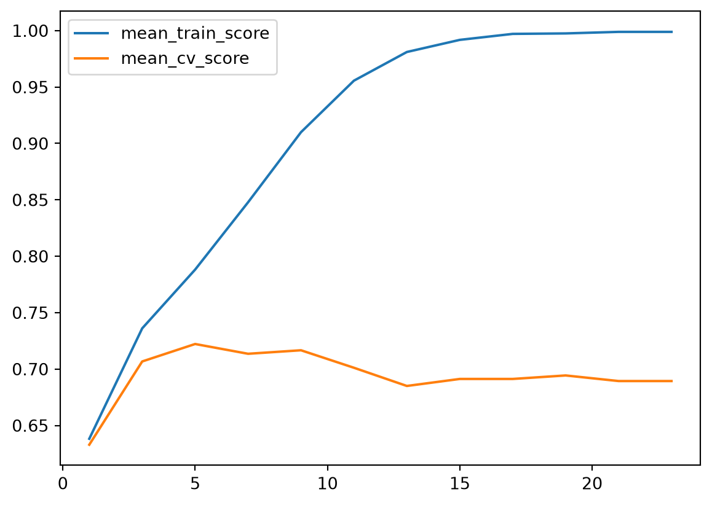

import matplotlib.pyplot as plt
import numpy as np
import pandas as pd
from sklearn import tree
from sklearn.dummy import DummyClassifier
from sklearn.model_selection import cross_val_score, cross_validate, train_test_split
from sklearn.tree import DecisionTreeClassifierSpotify Song Attributes
Data: Spotify Dataset Deep Dive: Spotify Deep Dive
This is a beginner Machine Learning project on a spotify dataset where I split a dataset to try to predict the kind of songs a listener would like
We have 12 fictional songs as training songs (features) and 4 new songs (target) 1 means Liked songs and 0 means Disliked songs
toy_song_data = {
"fast_tempo": [0, 1, 0, 1, 0, 1, 0, 1, 1, 0, 0, 1],
"high_energy": [0, 0, 0, 0, 1, 1, 1, 1, 1, 1, 1, 1],
"mostly_instrumental": [0, 0, 1, 1, 0, 0, 1, 1, 0, 1, 0, 0],
"target": [0, 0, 0, 0, 0, 1, 1, 1, 1, 1, 0, 0],
}
toy_df = pd.DataFrame(toy_song_data)
toy_df
new_song_data = {
"fast_tempo": [1, 0, 0, 1],
"high_energy": [1, 1, 0, 1],
"mostly_instrumental": [0, 1, 1, 1],
}
new_songs_df = pd.DataFrame(new_song_data)
new_songs_df| fast_tempo | high_energy | mostly_instrumental | |
|---|---|---|---|
| 0 | 1 | 1 | 0 |
| 1 | 0 | 1 | 1 |
| 2 | 0 | 0 | 1 |
| 3 | 1 | 1 | 1 |
Seperate, Creating a Tree, Fit & Score on Training Data
X_train_toy = toy_df.drop(columns = ["target"])
y_train_toy = toy_df["target"]
toy_tree = DecisionTreeClassifier(random_state = 16)
toy_tree.fit(X_train_toy, y_train_toy)
train_acc = toy_tree.score(X_train_toy,y_train_toy)
train_acc0.9166666666666666Train Test Split
spotify_df = pd.read_csv('spotify.csv', index_col=0)
spotify_df.head()
train_df, test_df = train_test_split(spotify_df, test_size= 0.2, random_state= 16)
print(f"Training examples: {len(train_df):,}; test examples: {len(test_df):,}")
train_df.info()
train_df.describe()Training examples: 1,613; test examples: 404
<class 'pandas.DataFrame'>
Index: 1613 entries, 1975 to 681
Data columns (total 16 columns):
# Column Non-Null Count Dtype
--- ------ -------------- -----
0 acousticness 1613 non-null float64
1 danceability 1613 non-null float64
2 duration_ms 1613 non-null int64
3 energy 1613 non-null float64
4 instrumentalness 1613 non-null float64
5 key 1613 non-null int64
6 liveness 1613 non-null float64
7 loudness 1613 non-null float64
8 mode 1613 non-null int64
9 speechiness 1613 non-null float64
10 tempo 1613 non-null float64
11 time_signature 1613 non-null float64
12 valence 1613 non-null float64
13 target 1613 non-null int64
14 song_title 1613 non-null str
15 artist 1613 non-null str
dtypes: float64(10), int64(4), str(2)
memory usage: 214.2 KB| acousticness | danceability | duration_ms | energy | instrumentalness | key | liveness | loudness | mode | speechiness | tempo | time_signature | valence | target | |
|---|---|---|---|---|---|---|---|---|---|---|---|---|---|---|
| count | 1613.000000 | 1613.000000 | 1613.000000 | 1613.000000 | 1613.000000 | 1613.000000 | 1613.000000 | 1613.000000 | 1613.000000 | 1613.000000 | 1613.000000 | 1613.000000 | 1613.000000 | 1613.00000 |
| mean | 0.187190 | 0.618825 | 245842.624923 | 0.682408 | 0.131251 | 5.296342 | 0.190213 | -7.049438 | 0.611283 | 0.091539 | 122.237646 | 3.969622 | 0.498468 | 0.49783 |
| std | 0.261603 | 0.161481 | 80228.073177 | 0.210968 | 0.271875 | 3.620176 | 0.155560 | 3.804879 | 0.487610 | 0.090137 | 26.635969 | 0.243414 | 0.248422 | 0.50015 |
| min | 0.000003 | 0.148000 | 16042.000000 | 0.014800 | 0.000000 | 0.000000 | 0.022000 | -33.097000 | 0.000000 | 0.023100 | 47.859000 | 3.000000 | 0.035900 | 0.00000 |
| 25% | 0.008600 | 0.511000 | 200213.000000 | 0.560000 | 0.000000 | 2.000000 | 0.092100 | -8.320000 | 0.000000 | 0.037500 | 101.384000 | 4.000000 | 0.296000 | 0.00000 |
| 50% | 0.062000 | 0.632000 | 229261.000000 | 0.716000 | 0.000067 | 6.000000 | 0.125000 | -6.232000 | 1.000000 | 0.054000 | 121.990000 | 4.000000 | 0.492000 | 0.00000 |
| 75% | 0.265000 | 0.739000 | 270427.000000 | 0.847000 | 0.045600 | 9.000000 | 0.247000 | -4.710000 | 1.000000 | 0.106000 | 138.021000 | 4.000000 | 0.695000 | 1.00000 |
| max | 0.995000 | 0.984000 | 849960.000000 | 0.998000 | 0.976000 | 11.000000 | 0.969000 | -0.307000 | 1.000000 | 0.816000 | 219.331000 | 5.000000 | 0.992000 | 1.00000 |
Baseline & Decision Tree Classifier
A baseline supplies a reference score. ‘Most frequent’ dummy classifier always predicts the most common class in the data used to fit it
X_train = train_df.drop(columns=["target", "song_title", "artist"])
y_train = train_df["target"]
X_test = test_df.drop(columns=["target", "song_title", "artist"])
y_test = test_df["target"]
dummy = DummyClassifier(strategy="most_frequent")
dummy_score = cross_val_score(dummy, X_train,y_train, cv = 10).mean()
dummy_score
spotify_tree = DecisionTreeClassifier(random_state=123)
dt_scores_df = pd.DataFrame(cross_validate(spotify_tree, X_train, y_train, return_train_score=True)).mean()
dt_scores_dffit_time 0.011590
score_time 0.001567
test_score 0.680722
train_score 0.999070
dtype: float64We would go with the tree classifier because the score imprved from 0.55 to 0.66. The test_score of 66% represents the fraction that the model labelled correctly which is 66% suggesting some songs were harder to predict. train_score (training accuracy) is 99%; so in each fold the tree is scored on the same 10 inputs it was trained on, means it received a 99% average accuarcy when fitting the data.
Finding the best Tree Depth using a loop
depths = np.arange(1, 25, 2)
depths
cv_train_scores = []
cv_valid_scores = []
for depth in depths:
# Create a tree for this depth and evaluate it on ten folds.
model = DecisionTreeClassifier(random_state=123, max_depth=depth)
scores = cross_validate(model, X_train, y_train, cv=10, return_train_score=True)
cv_train_scores.append(scores["train_score"].mean())
cv_valid_scores.append(scores["test_score"].mean())
results_df = pd.DataFrame(
{"mean_train_score": cv_train_scores, "mean_cv_score": cv_valid_scores},
index=depths,
)
results_df
#Plot
results_df.plot(xlabel= "cv_train_scores", ylabel="cv_valid_scores")
results_df[["mean_train_score", "mean_cv_score"]].plot();
best_max_depth = results_df['mean_cv_score'].idxmax()
best_max_depthnp.int64(5)

We see from the plot that as depth increases, the training score decreases because we now have a more complex model. At high depth, the tree has memorized training data so its great on training and poor on new predictions (training error is low and validation error is very high)
Fit the final model and score on the test set
best_model = DecisionTreeClassifier(max_depth = best_max_depth, random_state = 123)
best_model.fit(X_train, y_train)
test_score = best_model.score(X_test, y_test) #note to self: this is the evaluation step taken which is basically getting the score
test_score0.745049504950495We can conclude that we get a 74% accuracy when predicting the preferences of the this listener using a decision tree.